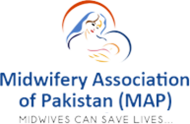

About Us || Midwifery/MNCH || Partners || Icm ---------- || Resourses || Together we can || News Feed || Media
Memories Of Ms. Leela Mall (Late)
Ms. Leela Mall (late) the pioneer midwife of Pakistan was born on 18th April 1932 in Punjab. She joined School of Midwifery Lady Dufferin Hospital, Karachi in March, 1993 and retired in May 2014. She served 21 years as Principal at Cowsajee School of Midwifery, Lady Dufferin Hospital (LDH), Karachi.
was also first General Secretary of Midwifery Association of Pakistan. She devoted her entire life in serving midwifery and humanity. Till the age of 84 she worked very hard and Cowasjee School of Midwifery got remarkable progress under her supervision.
She had lots of achievements during stay with LDH and due to her best performance the Cawasjee Foundation had donated a new building for school of midwifery for nurturing midwives through midwifery education.
Furthermore Ms. Mall had many educational exchange visits in United Kingdom (UK) for enhancement of midwifery knowledge with skills. Midwifery students during her period got top positions in Sindh Nurses Examination Board (SNEB).
Students of Cowasjee School of Midwifery were lucky enough to serve her in her last period of illness. They took care of her life, her children and made her comfortable as much as possible.
She died on 25th September 2016 on Sunday. May her soul rest in eternal peace. Ameen.
JOIN OUR MAILING LIST
Complete the form below and we'll keep you up to date with our latest news, projects and industry updates
|| || ||
Home ||Contact Us || Midwifery/MNCH || Partners || ICM || Together we can || Events || Contact Us
@2024 Midwifery Association of Pakistan (MAP)-Site by Bohradevelopers